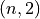
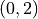

visiannot.tools.ToolsAnnotation¶
Module with functions for loading ViSiAnnoT event annotation files
Summary¶
Functions¶
Appends an element to a list in a dictionary where each value is a list |
|
Loads an annotation file as a time series of 0 and 1 |
|
Reads an annotation file in format vid-id_frame-id as a list of lists of intervals in frame number |
|
Reads an annotation file |
API¶
Functions¶
-
visiannot.tools.ToolsAnnotation.addElement(dic, key, element)[source]¶ Appends an element to a list in a dictionary where each value is a list
- Parameters
dic (dict) – input dictionary
key (any type that the key might be) – key to the list to append
element – element to append
If
keydoes not exist indic, then it is created and the value is initialized with[element].
-
visiannot.tools.ToolsAnnotation.convertAnnotArray(annot_path, nb_frames_list, fps, ref_fps=25, flag_invert=False)[source]¶ Loads an annotation file as a time series of 0 and 1
- Parameters
annot_path (str) – path to the annotation file
nb_frames_list (list) – list with number of frames in each file of the annotated recording
fps (int or float) – output frequency, must be below or equal to
ref_fpsref_fps (int or float) – frequency of the annotated signal
flag_invert (bool) – Specify if 0 and 1 must be inverted in the output signal
- Returns
1D numpy array with the annotation as a time series of 0 and 1
- Return type
numpy array
- Author
Raphael Weber
-
visiannot.tools.ToolsAnnotation.readAnnotFrames(path, nb_files=- 1, delimiter=' - ')[source]¶ Reads an annotation file in format vid-id_frame-id as a list of lists of intervals in frame number
Each element of the output list corresponds to one video (or signal) file.
This element is a list of lists with the annotation intervals in frame number contained in this file (it can be an empty list if there are no annotations in this file).
If an annotation interval spans several files, then the last end frame is set to -1 to specify that the annotation interval continues after the file.
- Parameters
path (str) – path to the annotation file in the format vid-id_frame-id
nb_files (int) – number of files in the annotated recording, set to
-1to ignoredelimiter (str) – delimiter used to split each line of the annotation file in columns
- Returns
list of lists of lists or empty list if file does not exist
- Return type
list
Example:
nb_files = 12 Annotation file 1_40 - 1_150 1_151 - 2_300 5_2 - 5_230 5_250 - 5_300 5_305 - 5_600 6_10 - 8_50 Output list [[], [[40, 150], [151, -1]], [[0, 300]], [], [], [[2, 230], [250, 300], [305, 600]], [[10, -1]], [[0, -1]], [[0, 50]], [], [], []]
- Author
Raphael Weber
-
visiannot.tools.ToolsAnnotation.readAnnotation(path, delimiter=' - ')[source]¶ Reads an annotation file
- Parameters
path (str) – path of the annotation file
delimiter (str) – delimiter used to split each line of the annotation file in columns
- Returns
array of shape  where the first column is the start time of the annotation and the second column is the end time of the annotation, or shape  if empty annotation
- Return type
numpy array
- Author
Raphael Weber